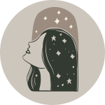
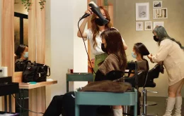

潔淨、養髮、紓壓，多效合一的淨化之旅
頭皮護理已逐漸成為趨勢，專業頭皮護理在歐美等國家早已是一種潮流。
到美髮沙龍店的目的，已不僅僅侷限在做髮型，更多人選擇頭皮護理SPA。
頭皮養護，不僅是展現生活品質不可或缺的一塊。
從您髮絲散發出的光澤，質地以及氣息，更是一種優雅與時尚。
到美髮沙龍店的目的，已不僅僅侷限在做髮型，更多人選擇頭皮護理SPA。
頭皮養護，不僅是展現生活品質不可或缺的一塊。
從您髮絲散發出的光澤，質地以及氣息，更是一種優雅與時尚。
你的頭髮，有這些狀況嗎？
- 總是出油像好幾天沒洗頭
- 頭皮屑讓你尷尬不已
- 癢癢難耐實在受不了
- 落髮危機好生困擾
- 斷髮受損頭髮都留不長
- 髮質乾燥怎麼護髮都沒用
其實想要柔順秀髮，不能只是針對頭髮，
你的頭皮，才是一切根本
頭皮護理的重要性
你有覺得做了再多護髮、染髮，還是改善不了頭髮乾燥、掉髮的困擾嗎？
其實頭皮定期適當的保養，能夠維持它的彈性也能延緩老化，更能給予髮絲健康的環境。
其實頭皮定期適當的保養，能夠維持它的彈性也能延緩老化，更能給予髮絲健康的環境。
- 
- 改善髮質
- 保養好頭髮的根基，給予健全完善的滋潤，自然能將養分充足的注入在髮絲，創造豐盈柔順的質感。
- 減緩掉髮
- 壓力大、熬夜、生活作息或飲食不正常等會影響掉髮，其實不健康的頭皮也是掉髮的元兇之一。髮根及髮絲因為頭皮的不健康無法充分獲取養分，進而易讓髮根斷裂。
- 減少白髮生成
- 不健康的頭皮容易讓分泌麥拉寧黑色素的機制退化，少了黑色素的元素，自然白髮就容易生成。
- 擊退皮脂污垢及皮屑
- 頭皮偏酸或偏鹼都不正常，容易使皮脂腺失衡，失去對細菌的抑制，進而引發多油多屑、毛囊炎等問題。
每一道環節為您細心呵護
頭皮的老化速度比臉部肌膚快6-8倍，要有健康頭髮，絕不能忽視頭皮護理的重要性。
- 頂級養護產品
- Take Hair所使用的覺亞頭皮養護保養系列產品，堅持只添加養護所需成分，清潔的同時修護髮絲與頭皮。
不僅淨化頭皮，打造健康髮根基礎，更給予髮絲茁壯、輕盈、健康的養分。
- 頭皮檢測諮詢
- 透過專業頭皮檢測諮詢，可清楚了解頭皮現況，量身訂製您個人頭皮護理方程式，更結合經絡按摩手法紓壓、減壓、潔淨、養護一氣呵成。

- 舒適的環境
- 過度的緊張也容易對頭皮產生不好的影響，我們提供整潔舒適的沙龍環境，半開放式的紓療空間，隱私不被打擾，讓您徹底放鬆心情。

- 專業頭皮養護師
- 全程安排專職頭皮養護師為您頭皮做檢測及說明，讓你更加了解頭皮狀況及養護建議，讓您安心養護。
- 經典淨化頭皮護理
- NT＄1500
- 服務時間：90分鐘

- 頂級紓壓頭皮護理
- (頭皮護理＋采耳)
- NT＄1980
- 服務時間：120分鐘
以經典頭皮護理流程，輔以傳統古法采耳技法，達到深層紓壓，耳目一新的暢快感受。
采耳流程
眼部熱敷舒緩加上專業手技按摩手部，達到深層放鬆舒緩的效果。再運用耳道內視鏡檢查耳道狀況，並使用孔雀羽毛、浮絨毛、大音叉等專業工具清掃紓壓，進而改善睡眠與壓力並刺激末梢神經達到顱內高潮的酥麻放鬆感受。最後進行掏耳清潔耳垢，恢復耳道通氣舒暢，提神醒腦作用。
- 深層修護頭皮護理
- (頭皮護理＋哥德式四段護髮)
- NT＄1880
- 服務時間：150分鐘
經典頭皮護理流程,重拾你頭皮健康，加上小分子多階段式修復髮絲，豐盈潤澤，打造內外兼好的秀髮完美狀態。
哥德式四段護髮
哥德式四段護髮是結構式護髮的一種，是運用較小分子來去修補受損頭髮的毛鱗片，使用四種不同功效護髮劑，深層修補髮絲水份，並修護毛髮內部的CMC脂質層，形成滋潤感不易消失的保濕皮膜，達到長效時間的柔順效果！
頂級養護產品-覺亞Juliart
 不含人工香料
不含人工香料- 溫和低刺激性
- 高度保濕清潔
- 系列髮品入圍Pure Beauty Global Awards 2020最佳髮品
您的頭皮及秀髮，需要被良心對待
- 頭皮護理療程全程使用覺亞系列品牌。
- 不添加人工香料及劣質色素，志在提供最純淨天然優質的髮品，保護頭皮，呵護秀髮。
- 專門針對頭皮角質堆積、油頭、頭皮屑、敏感、稀疏五大頭皮問題研發的系列產品。
- 並以胺基酸為基底，使用天然、弱酸性的草本成分，為您帶來溫和低刺激性的清潔與保養。
頭皮養護，應該交給專業的來
Take Hair Salon聘用專業頭皮養護師，提供給您最專業的知識，最有效的養護。
別於坊間沙龍的頭皮護理療程，全權交由設計師操作，針對您的造型可塑造完美髮型，但頭皮的事，我們強烈建議，還是需要由受過專業課程及訓練的頭皮師操刀，才能給您最完善的養護建議。
別於坊間沙龍的頭皮護理療程，全權交由設計師操作，針對您的造型可塑造完美髮型，但頭皮的事，我們強烈建議，還是需要由受過專業課程及訓練的頭皮師操刀，才能給您最完善的養護建議。
將您的秀髮 捧在手心上呵護
Take Hair. We Take Care of Your Hair.
Take Hair. We Take Care of Your Hair.